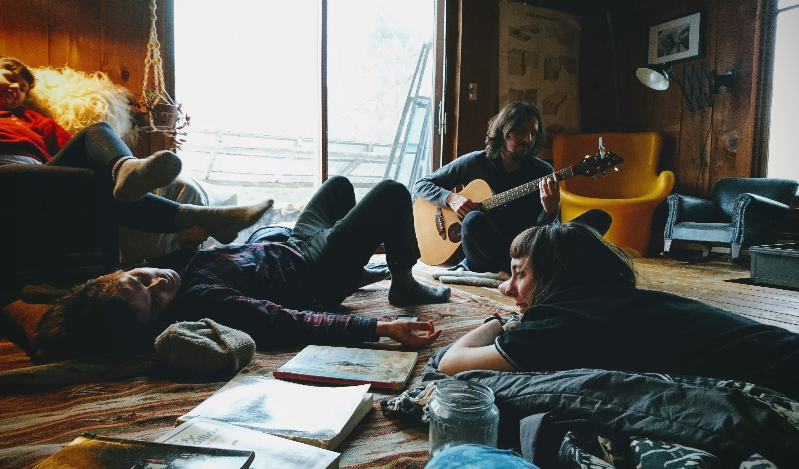
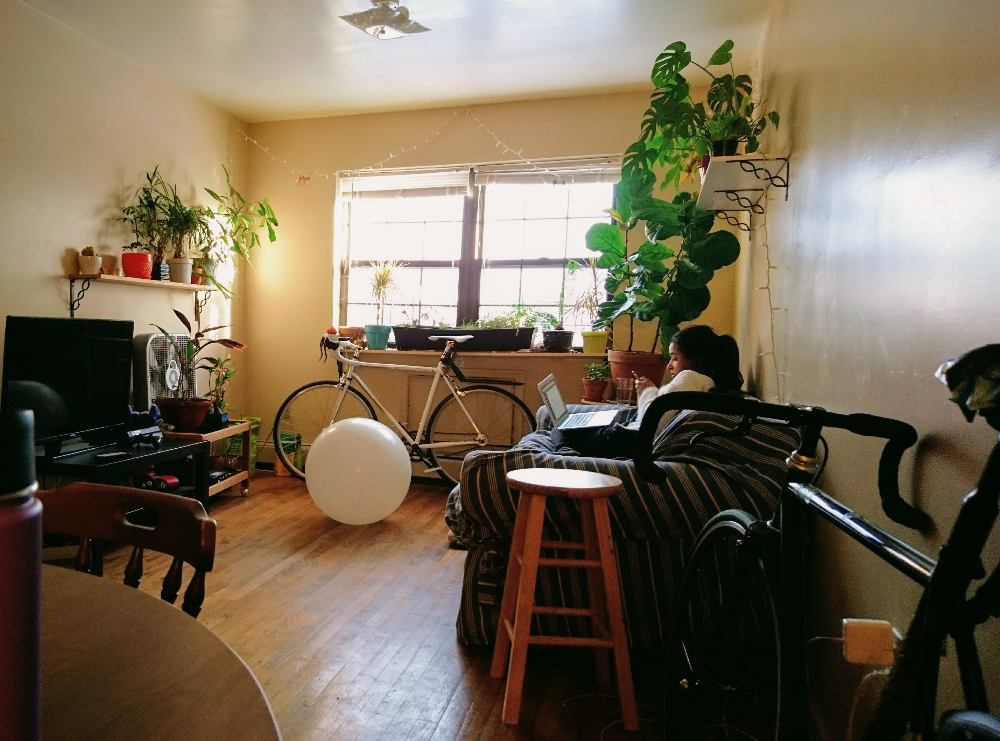
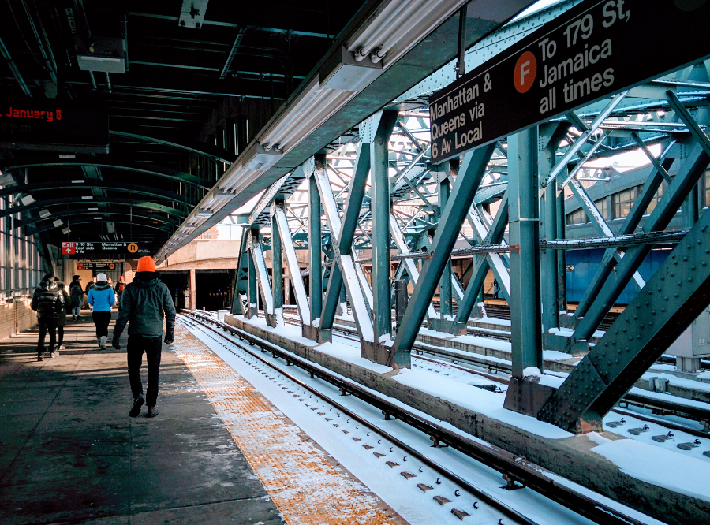
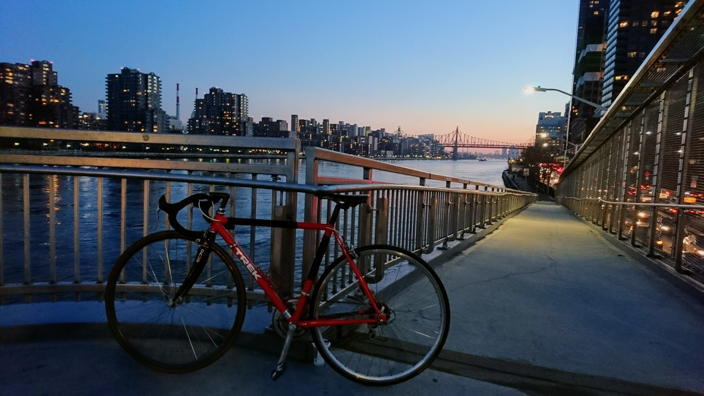
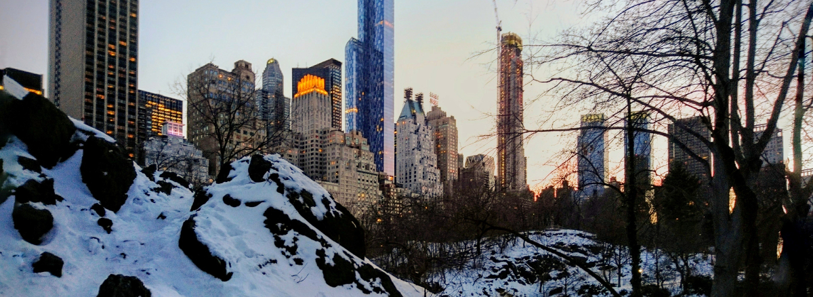

a tiny life in brooklyn winter
Three months later and I’m taking down my wall tapestries again, leaving the climbing gym where I’ve made friends with the regulars characters and routesetters, the cafes I work at often enough that they recognise my mannerisms but not enough that they remember my name, my tiny job, my tiny bike.
I came to New York with high hopes of learning fun computery things at recurse center and ice climbing upstate – I was rejected from rc, and found myself in the shortest and most indecisive, un-ice-forming conditions of northeast winter season in recent memory.
I did manage a lot of computery things on my own, was super lucky to have met excellent people who went out of their way to include me in their lives, and did some maintenance work on the fear and anxiety I occasionally accumulate around intellectual vulnerability and feeling competent if I’m not vigilant. I read a lot of books.
I think it was an ok way to spend some time.
In December I was in San Diego tessellating my objects into two checked bags, thinking I’d go live in New York for a long time. Metal and rope are bad at compressing so most of it was climbing and backpacking stuff by volume, but I did manage a few nice books too (:
I’m leaving having touched none of my gear, which I’m a tiny bit sad about. I marathoned the five-hour public transit daytrips up the Hudson every weekend the first month in a vague attempt at being in mountains before giving in to the cityfolk winter vegetable aesthetic.
I met Kat, another in the increasingly large fraction of my friends who have trucks and vans that they live out of, who hosted a gathering of mountain folks in a lovely cabin in the woods.

Kat knew the Hudson River Valley and took me around in her truck, and I felt that I was first coming to understand New York through an outskirter’s perspective. We hiked some Hudson classics that the internet had warned me would be swarming with humans, but we found enchantingly lonely in the winter.
We ran into some friendly cave folks who taught us some caving basics! Ugh cavers are so cool. It was pretty rad fiddling with cave gear coming from a climbing background, comparing notes of all the similar but slightly different, specially adapted gadgets.
Kat left for her cave job in Oregon and I fell into a New York City winter coma.

Housing in Brooklyn is somewhat affordable in a way that is unreal to a recent San Francisco/Bay alumn. My flatmates and neighbors are all friends with each other and form a loose family of sorts, with proper killswitches for introvert personal-time needs. Commonspaces are lovely with plants and kitchens are stocked and the house is warm and smells like cooking. This is what I’m going to miss most about here.
I don’t understand why simple habits take a different shape around each place. You’d think a urgency for caffeine would overcome physical continuity, but in this iteration of home, the aeropress and handgrinder I’d been so excited about and had used every day in Berlin lay untouched in the cabinet.

I live close to the subway, but a round trip costs a pint of nice ice cream (even in winter I compare the emotional value of my spendings against ice cream). I agonised over bleeding money from public transit and torturing my eyeballs from riding high speeds at freezing, but after going down a brief wormhole about vintage frames I nabbed a deal on craigslist.
BIKES ARE THE BEST.
So much ambient anxiety about my life choices dissipated after I regained wheeled status \o/ I need a hammerspace bike to explore the world with.

A friend I’ll miss along with my human friends, this little red aluminum bicycle that happens to be the same age as me, my adventure twin.
I’d originally been planning to travel in south america during the nothern hemisphere’s winter months, but after the election in November I felt so guilty for being in a selfish phase of my life that I decided to go to New York instead, to put my skills to work against something that felt so big and ominous and uncertain and terrible. We went to meetups and rallies and marches and talks and hackathons. I don’t think I accomplished anything in particular. I feel pretty ineffective in general.
In the end I spent most of my time being selfish anyway. After two weeks of deeply inspecting and making web tools and demos and builds for the first time I feel like I’m on the verge of not being a poser when I tell people I’m a frontend engineer. I think I’m starting to understand one reason people like school: it’s a place where learning doesn’t feel weirdly self-indulgent. It is a context for guilt-free exploration, where the world waits patiently as you take and take and build the potential to give back. Stay in school, kids.
Time is going by too quickly for how much novelty I’m desperately shoveling into my human experience. Many things are happening, and a lot of them don’t feel real. It hasn’t registered that I’m going to be in Romania in a week and a half, not because it’s particularly shocking, but because it seems reasonable enough that it doesn’t require a second thought.
I was obsessive about spending my time as efficiently as possible when I set out on this nomadic year, but by now much of my anxieties over efficiency have been replaced by I need nature asap and but I also need my computer because my brain is marinating in computery things!! I’m feeling the multitude of narratives that is me fighting for dominance, and of the many things humans are good at multitasking is critically low on the list. This is something my brother says, and it’s been on my mind a lot. But how do I pick one thing when everything is interesting?
These days I keep going back and forth between being really excited to be on the road again and seeing friends and reading and learning and chasing opportunities, and being exhausted from being excited about things.
